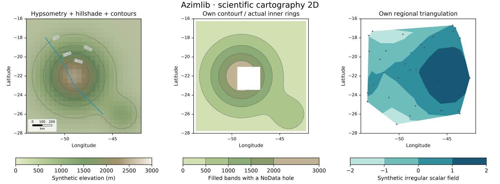
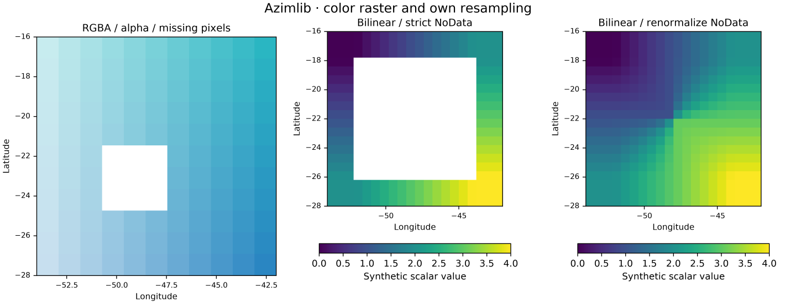
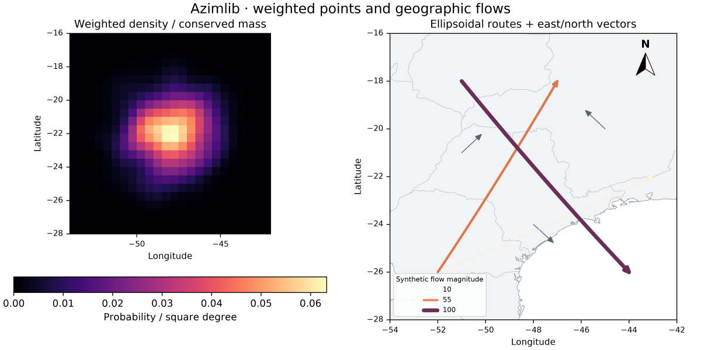

Scientific 2D gallery
Generated by scientific_atlas.py using the installed Azimlib renderer. Synthetic terrain, pixels, weighted samples, triangulation nodes and flows are original fixtures, BSD-3-Clause, Copyright (c) 2026 Kernerian. Background boundaries in the flow map are Natural Earth public domain; colormap/font notices remain in the project. See contracts and manifest.



PNG/SVG/HTML are exported locally; PNG previews are versioned here. Neither HTML navigation nor an orthographic globe is a true 3D terrain camera.